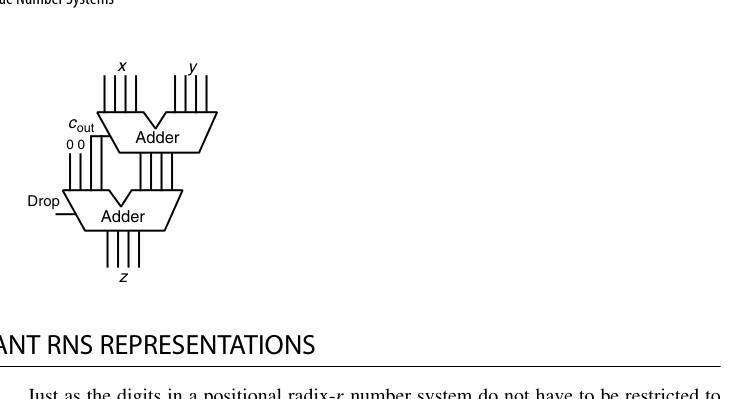
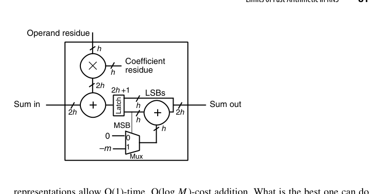
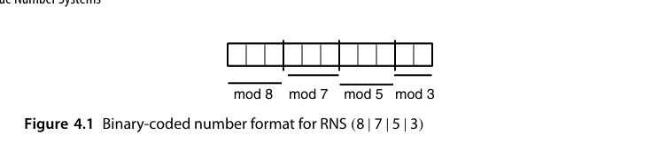
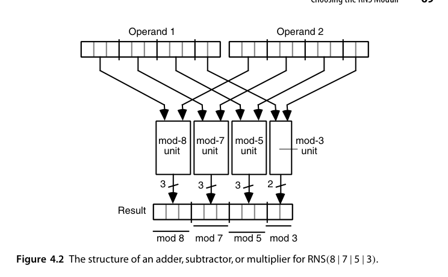

第4章 剩余数系（Residue Number Systems）
本章导读
剩余数系（Residue Number System, RNS）是数表示里最”离经叛道”的一支：它不记录一个数本身，而是记录它对一组两两互素模数（moduli）的余数。这样做的回报是惊人的——加、减、乘完全没有跨通道进位，每个模数通道独立并行工作。代价同样惊人：比较大小、除法、溢出检测、符号判断全部变得极其困难。RNS 在 DSP、密码学（大数模乘）、容错计算里有一席之地，本章讲清它的能力与边界。
4.1 RNS 表示与算术（RNS Representation and Arithmetic）
中国剩余定理（Chinese Remainder Theorem, CRT）是 RNS 的数学基石：设模数 \(m_1, m_2, \dots, m_n\) 两两互素，\(M = \prod m_i\)，则区间 \([0, M)\) 内的任意整数 \(x\) 与余数向量
\[ x \;\longleftrightarrow\; \big(x \bmod m_1,\; x \bmod m_2,\; \dots,\; x \bmod m_n\big) \]
一一对应。
运算规则漂亮得不像话：
\[ x \odot y \;\longleftrightarrow\; \big((x_1 \odot y_1) \bmod m_1,\; \dots,\; (x_n \odot y_n) \bmod m_n\big), \quad \odot \in \{+, -, \times\} \]
每个通道只需一个小的模 \(m_i\) 运算器，通道之间零交互。进位链在系统层面被连根拔掉——这是比冗余数系更彻底的并行化。
以本书反复使用的 \(\mathrm{RNS}(8\,|\,7\,|\,5\,|\,3)\) 为例：动态范围 \(M = 8\times7\times5\times3 = 840\)，每个余数分别为 3、3、3、2 位，共 11 比特。取 \(x = 48\)、\(y = 45\)，有
\[ 48 \leftrightarrow (0\,|\,6\,|\,3\,|\,0)_{\mathrm{RNS}},\qquad 45 \leftrightarrow (5\,|\,3\,|\,0\,|\,0)_{\mathrm{RNS}} \]
它们的和、差、积可以逐通道、完全并行地算出，例如
\[ x + y \leftrightarrow (0+5 \bmod 8,\; 6+3 \bmod 7,\; 3+0 \bmod 5,\; 0+0 \bmod 3) = (5\,|\,2\,|\,3\,|\,0)_{\mathrm{RNS}} \]
每个通道只是 2-3 比特的模加法器，最深也只有两级门——与整个系统的字长无关。
若要用 RNS 表示有符号数，只需把动态范围 \([0, M)\) 划分成 \([0, P]\) 与 \([M-N, M)\)（即负数区），满足 \(M = N + P + 1\)。至于”某个余数向量到底落在正数区还是负数区”，正是 4.4 节要处理的难题。
把 RNS 想象成”分头行动、各管一摊”：大数运算被切成若干互不干扰的小数运算。瓶颈从”进位传播”转移到”编解码”——进出 RNS 域的转换（4.3 节）成为系统的主要开销。
4.2 模数的选择（Choosing the RNS Moduli）
选模数是 RNS 设计的核心艺术，目标有两个：通道硬件简单、动态范围够用。工程上的宠儿是低成本模数集合：
\[ \{2^k,\; 2^k - 1,\; 2^{k-1} - 1\} \]
- 模 \(2^k\)：取低 \(k\) 位，零成本；
- 模 \(2^k - 1\)：利用 \(2^k \equiv 1 \pmod{2^k - 1}\)，把高位折回低位相加（循环进位），只需一个加法器加一次折叠修正；
- 模 \(2^{k-1}-1\)：同理，\(2^{k-1} \equiv 1\)。
例如 \(\{32, 31, 15\}\)（\(k=5\)）三通道 RNS，动态范围 \(M = 32 \times 31 \times 15 = 14880\)，约 13.9 位，每个通道都是小加法器级别的成本。
低成本模数能成体系，靠的是一条简单的数论事实：
\[ \gcd(2^a - 1,\; 2^b - 1) = 1 \iff \gcd(a, b) = 1 \]
于是任取一组两两互素的指数 \(a_{k-2} > \dots > a_1 > a_0\)，就可以构造出
\[ \mathrm{RNS}\big(2^{a_{k-2}} \,\big|\, 2^{a_{k-2}}\!-\!1 \,\big|\, \dots \,\big|\, 2^{a_1}\!-\!1 \,\big|\, 2^{a_0}\!-\!1\big) \]
其中最宽余数是 \(a_{k-2}\) 位；为了在给定余数宽度下最大化动态范围，偶数模数应尽可能取大。
模 \(2^k - 1\) 的折叠修正（“折半相加、再折半”）与 1 的补码加法的循环进位是同一个数学结构。做 FPGA/ASIC 的模运算单元时，这是使用频率最高的技巧之一。
照这个方法为”覆盖 \([0, 100000]\)“选模数，过程是这样的：
\[ \begin{aligned} \mathrm{RNS}(2^3\,|\,2^3\!-\!1\,|\,2^2\!-\!1) &\to M = 168\\ \mathrm{RNS}(2^4\,|\,2^4\!-\!1\,|\,2^3\!-\!1) &\to M = 1680\\ \mathrm{RNS}(2^5\,|\,2^5\!-\!1\,|\,2^3\!-\!1\,|\,2^2\!-\!1) &\to M = 20832\\ \mathrm{RNS}(2^5\,|\,2^5\!-\!1\,|\,2^4\!-\!1\,|\,2^3\!-\!1) &\to M = 104160 \end{aligned} \]
最后一行 \(\mathrm{RNS}(32\,|\,31\,|\,15\,|\,7)\) 达标。注意一旦把指数 4 加进来，指数 2 就必须剔除——因为 \(\gcd(4,2)\neq 1\)，从而 \(2^4-1\) 与 \(2^2-1\) 不互素。
该系统每个数占 \(5+5+4+3 = 17\) 比特，动态范围 104160（约 16.7 位），表示效率接近 100%，一个比特都没浪费。一般地，低成本 RNS 的表示效率可证明优于 50%，即最多浪费 1 比特。
作为对照，不限制模数形式时可以选 \(\mathrm{RNS}(15\,|\,13\,|\,11\,|\,23\,|\,7)\)，18 比特、\(M = 120120\)。两者都够用，后者通道更多更窄、前者通道更少更宽但算术单元更简单。实践中几乎总是选后者——通道硬件的简洁性比省一两个比特重要得多。
4.3 数的编码与解码（Encoding and Decoding of Numbers）
编码（二进制 → RNS）：对输入数逐块取模。把 \(k\) 位输入按权重 \(2^i \bmod m_j\) 加权求和再取模即可；权重表可以预存，编码器是一个小乘加阵列。
直接做除法取模太慢，实际做法是预存 \(\langle 2^j \rangle_{m_i}\) 并利用
\[ \big\langle (y_{k-1}\dots y_1 y_0)_2 \big\rangle_{m_i} = \Big\langle \langle 2^{k-1} y_{k-1}\rangle_{m_i} + \dots + \langle 2 y_1\rangle_{m_i} + \langle y_0\rangle_{m_i} \Big\rangle_{m_i} \]
即”把置位比特对应的权重常数模加起来”。例：把 \(y = (1010\,0100)_2 = 164\) 编入 \(\mathrm{RNS}(8\,|\,7\,|\,5\,|\,3)\)。模 8 的余数直接取低 3 位得 \(4\)；又 \(y = 2^7 + 2^5 + 2^2\)，查表得
\[ x_2 = \langle 2+4+4\rangle_7 = 3,\quad x_1 = \langle 3+2+4\rangle_5 = 4,\quad x_0 = \langle 2+2+1\rangle_3 = 2 \]
所以 \(164 \leftrightarrow (4\,|\,3\,|\,4\,|\,2)_{\mathrm{RNS}}\)。整个编码只需若干次小模数加法，无需任何除法器。若想再快一倍，可把输入看成基数 4 的数，预存 \(\langle 4^i\rangle\)、\(\langle 2\cdot4^i\rangle\)、\(\langle 3\cdot4^i\rangle\)，用 \(k/2\) 次模加完成。

解码（RNS → 二进制）有两条路线：
- CRT 直接法：\(x = \big(\sum_j a_j\, M_j\, x_j\big) \bmod M\)，其中 \(M_j = M/m_j\)，\(a_j\) 是 \(M_j\) 对 \(m_j\) 的逆元（可预计算）。问题是这是大数运算——\(M\) 可能很大，解码器本身又变成了一个宽位运算部件，多少有点讽刺；
- 混合基数转换（Mixed-Radix Conversion, MRC）：逐通道”剥离”余数，每次只做小模数减法与小常数乘法，把 \(x\) 表示成混合基数形式 \(x = z_0 + m_1(z_1 + m_2(z_2 + \cdots))\)。硬件更省，但是顺序过程，延迟随通道数线性增长。
MRC 的剥离过程值得细看。混合基数系统 \(\mathrm{MRS}(8\,|\,7\,|\,5\,|\,3)\) 的位权依次是 \(7\!\times\!5\!\times\!3 = 105\)、\(5\!\times\!3 = 15\)、\(3\)、\(1\)。由定义 \(z_0 = x_0\)；把 \(z_0\) 从 RNS 表示里减掉后，所得数必能被 \(m_0\) 整除，除以 \(m_0\) 就”消掉一个模数”，问题规模减一。除以 \(m_0\) 在 RNS 里只需乘 \(m_0\) 的各通道逆元，例如 \(3\) 对 8、7、5 的逆元分别是 3、5、2：
\[ \frac{(0\,|\,6\,|\,3\,|\,0)_{\mathrm{RNS}}}{3} = (0\,|\,6\,|\,3\,|\,0)_{\mathrm{RNS}} \times (3\,|\,5\,|\,2\,|\,-)_{\mathrm{RNS}} = (0\,|\,2\,|\,1\,|\,-)_{\mathrm{RNS}} \]
反复”减一位、除一个模数”，依次剥出 \(z_1 = 1\)、\(z_2 = 3\)、\(z_3 = 0\)，最终
\[ (0\,|\,6\,|\,3\,|\,0)_{\mathrm{RNS}} = (0\,|\,3\,|\,1\,|\,0)_{\mathrm{MRS}} = 3\times15 + 1\times3 = 48 \]
CRT 直接法的另一面是”位权常数”视角：对 \(\mathrm{RNS}(8\,|\,7\,|\,5\,|\,3)\)，四个单位向量的值是 \(105\)、\(120\)、\(336\)、\(280\)，于是
\[ (3\,|\,2\,|\,4\,|\,2)_{\mathrm{RNS}} = \big\langle 3\!\times\!105 + 2\!\times\!120 + 4\!\times\!336 + 2\!\times\!280 \big\rangle_{840} = 779 \]
若要避免乘法，可以把 \(\big\langle M_i \langle \alpha_i x_i\rangle_{m_i}\big\rangle_M\) 对全部 \((i, x_i)\) 预存成表，总容量 \(\sum_i m_i\) 个字，解码退化为查表 + 模 \(M\) 加法。这是一条非常实用的工程路径：表很小（本例 8+7+5+3 = 23 项），却把解码变成了全加器的事。
MRC 是串行的（\(k\) 轮剥离），CRT 是并行的但要一次宽位模 \(M\) 加法；查表 + 模加则在面积与速度之间取了折中。典型选择是：通道数少、追求吞吐时用 CRT + 查表；通道数多、面积紧张时用 MRC。解码从来不是免费的——它是评估一个 RNS 方案时必须先算的账。
4.4 困难的 RNS 算术（Difficult RNS Arithmetic Operations）
RNS 的”困难清单”，本质上都是因为余数向量丢失了全局量级信息：
- 大小比较 / 符号检测：两个余数向量看不出谁大谁小，必须先解码（或部分解码）；
- 溢出检测：结果超出 \([0, M)\) 就”回绕”了，而回绕与否同样无法从余数直接看出；
- 除法与缩放（scaling）：除以非模数常数没有通道级算法；除以模数本身（缩放）尚可用乘逆元实现；
- 模 \(M\) 约简：中间结果超出动态范围后的归约同样昂贵。
这四件事其实是同一件事。若用动态范围 \(M\) 的 RNS 表示 \([0, P]\) 与 \([M-N, M)\) 两段（\(M = N+P+1\)），那么”判符号”就是”与 \(P\) 比较”，而溢出检测又可以由操作数符号与结果符号推出。所以只需解决幅值比较与一般除法两个问题。
比较的最实用手段是近似 CRT 解码：把定理 4.1 两边除以 \(M\)，得到缩放值
\[ \frac{x}{M} = \left\langle \sum_{i=0}^{k-1} m_i^{-1}\,\big\langle \alpha_i x_i \big\rangle_{m_i} \right\rangle_1 \;\in\; [0, 1) \]
这里的加法是模 1 加法（只留小数部分，进位直接丢弃），比模 \(M\) 加法简单得多；每一项又都可以对全部 \((i, x_i)\) 预存成表。仍取前例：
\[ \frac{x}{M} \approx \langle .0000 + .8571 + .2000 + .0000\rangle_1 = .0571,\qquad \frac{y}{M} \approx \langle .6250 + .4286 + .0000 + .0000\rangle_1 = .0536 \]
于是 \(x = 48 > y = 45\)，且结论可靠。误差分析很干净：若每个表项的最大误差为 \(\varepsilon\)，则缩放值的误差不超过 \(k\varepsilon\)。本例表项保留 4 位小数，\(\varepsilon = 0.00005\)，\(k\varepsilon = 0.0002\)，远小于两个数 0.0035 的差距。
近似 CRT 的价值在于快。工程上常见做法是先跑一次快速的近似解码，若两个数的缩放值差距大于误差界 \(2k\varepsilon\) 就直接下结论；否则再退回精确解码（MRC 或 CRT）复核。这样绝大多数比较只花查表 + 模 1 加法的代价。
更有意思的是，很多算法根本不需要精确比较，只需要一个三值判定 \(x<y\) / \(x\approx y\) / \(x>y\)。SRT 除法（第 14 章）正是如此：它根据部分余数 \(s\) 的符号从冗余商数位集 \(\{-1,0,1\}\) 里挑一位，而”符号”本来就允许一定的模糊——只要 \(s\) 离 0 足够远，选 \(-1\) 还是 \(+1\) 都不会错。算法对不精确的容忍度，正好把 RNS 的短板补上了；这也是 RNS 除法唯一走得通的路子。
RNS 系统的设计哲学是：尽量让算法只含加减乘，把比较、除法、缩放赶到算法流程的边界（最好整个任务只做一次）。FIR 滤波、FFT、矩阵乘法、RSA/ECC 的模乘内核都是天然适配；凡是控制流依赖数据大小比较的算法，RNS 都很痛苦。
4.5 冗余 RNS 表示（Redundant RNS Representations）
把第 3 章的冗余思想叠进 RNS：增加一个或多个冗余模数（redundant moduli），使合法状态构成余数空间的一个子集。用途：
- 错误检测：若某通道出错，余数向量大概率落在合法子集之外——这是第 27 章容错算术的重要工具；
- 扩大有效动态范围，给中间结果”留出头部空间”，缓解 4.4 节的溢出问题。
另一种更常用的做法是放宽每个余数自身的数位集：不必把模 \(m_i\) 的余数限制在 \([0, m_i-1]\)，而可以允许它取 \([0, \beta_i]\)（\(\beta_i \ge m_i\)），这就是伪余数（pseudoresidue）。
以模 13 为例，正常余数需要 4 位表示 \([0,12]\)（浪费了 3 个码字）。若允许伪余数取 \([0,15]\)，则 \(13, 14, 15\) 分别等价于 \(0, 1, 2\)——这三个值有了两种表示，系统因此冗余。好处是运算可以彻底绕开”比较 + 条件减”的约简：把一个普通余数 \(x\) 与一个伪余数 \(y\) 相加时，直接用一个 4 位二进制加法器；若进位 \(c_{out}=0\) 就照单全收，若 \(c_{out}=1\) 则丢弃这个值 16 的进位并加 3（因为 \(16 - 13 = 3\)）。图 4.3（见 4.3 节）就是这个单元的完整结构：一次加法 + 一次条件加常数，比”加法 + 比较 + 减法”省了一整级。
伪余数还可以直接加倍宽度：让本来只需 \(h\) 位的模 \(m\) 余数住进 \(2h\) 位的容器。这对乘累加（multiply-accumulate）特别划算——两个 \(h\) 位余数相乘得 \(2h\) 位积，直接加到 \(2h\) 位的累加和上；累加结果超过 \(2^h m\) 时才减一次 \(2^h m\) 完成约简。

这里的设计哲学与第 3 章一脉相承：约简（相当于冗余域的转换）是最贵的一步，那就把它推迟到最后一刻。中间的所有乘法和加法都留在”宽松”的伪余数域里跑，每步只需一个普通加法器加一个多路选择器。脉动阵列式的 FIR 滤波器、RSA 的模乘内核大量使用这个结构。
伪余数带来的冗余不是免费的：码字变多了，相等性判断与错误检测就变复杂；同时每个通道要多占比特、多布线。不过由于冗余是有意引入的（第 27 章），这份复杂度往往正是检错能力本身的来源——一份开销买两样东西。
4.6 RNS 快速算术的极限（Limits of Fast Arithmetic in RNS）
理论上 RNS 通道延迟 \(O(\log \log M)\) 级别（小模数加法），看似完胜普通二进制的 \(O(\log M)\)。但原书冷静地指出：
- 编解码开销摊薄了优势——除非一次进入 RNS 域后做大量运算；
- 工艺无关性存疑：在 VLSI 里，布线规则性与模块复用往往比渐近复杂度更决定最终速度，高度规整的二进制前缀加法器（第 6 章）实践中极难被 RNS 击败；
- RNS 的甜区是天然模运算的算法（密码学、多项式/NTT 运算）与容错场景。
把渐近结论讲精确一些，是这一节最有价值的部分。若为了让模数尽量小而取最小的素数作模数，三条数论事实给出了边界：
- 第 \(i\) 个素数 \(p_i \sim i\ln i\)；
- \([1, n]\) 内素数个数 \(\sim n/\ln n\)；
- \([1, n]\) 内所有素数之积 \(\sim e^n\)。
由此可得定理：任意 \(k\) 位二进制数可用 \(O(k/\log k)\) 个模数表示，且最大模数只需 \(O(\log k)\) 位。证明思路是：若需要的最大素数为 \(n\)，由 \(e^n \approx 2^k\) 得 \(n < k\)，再由素数计数定理得模数个数为 \(O(n/\log n) = O(k/\log k)\)。
结论是 RNS 加法可以做到
\[ \text{时间 } O(\log\log\log M),\qquad \text{成本 } O(\log M) \]
对比一下三种表示的理论极限：普通二进制位置数制是 \(O(\log\log M)\) 时间、\(O(\log M)\) 成本；冗余表示是 \(O(1)\) 时间、\(O(\log M)\) 成本；RNS 是 \(O(\log\log\log M)\) 时间、\(O(\log M)\) 成本。
也就是说：三者的成本渐近相同，RNS 的时间介于两者之间——它比二进制快，却比不上冗余表示。若再限定只能用低成本模数 \(2^a\)、\(2^a-1\)，则由”前 \(i\) 个素数之和 \(\sim O(i^2\ln i)\)“可得需要 \(O(\sqrt{k/\log k})\) 个模数、最大模数 \(O(\sqrt{k\log k})\) 位，渐近上还要再差一些。
\(O(\log\log\log M)\) 在 \(M = 2^{64}\) 时不过是个位数级别的门延迟，看上去极美。但真实芯片里，编解码的开销、通道间布线的不匹配、以及控制逻辑往往占据主导。RNS 真正胜出的场合从来不是”加法更快”，而是”算法本身就是模运算”——RSA/ECC、NTT、LWE 这类密码学内核，模数天然存在，编解码的账也就不用付了。
本章小结
- RNS：用 CRT 把大数拆成独立小通道，加减乘无进位、全并行。
- 低成本模数 \(\{2^k, 2^k-1, 2^{k-1}-1\}\) 是工程首选。
- 编解码（尤其解码）是主要开销；CRT 直接法与 MRC 各有取舍。
- 比较/符号/溢出/除法困难 → 适用面限于”重加减乘、轻判断”的算法。
- 与冗余数系合体可检错，是容错计算的利器。
原书插图

